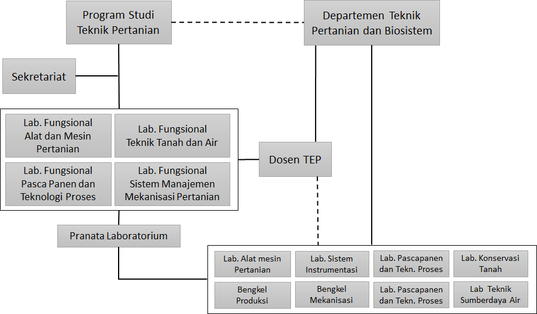

Struktur Organisasi di Lingkungan Program Studi Teknik Pertanian
Kepala Departemen Teknik Pertanian dan Biosistem
Prof. Chay Asdak, M.Sc., PhD
Ketua Program Studi Teknik Pertanian
Dr. Sophia Dwiratna N.P., M.T.
Kepala Lab. Teknik Tanah dan Air
Dr. Boy Macklin Pareira P., S.T., M.Si.
Kepala Lab. Alat dan Mesin Pertanian
Ir. Mimin Muhaemin, M.Eng., Ph.D
Kepala Lab. Pascapanen dan Teknologi Proses
Asri Widyasanti, STP., M.Eng
Kepala Lab. Sistem dan Manajemen Mekanisasi Pertanian
Handarto, STP., M.Agr., Ph.D